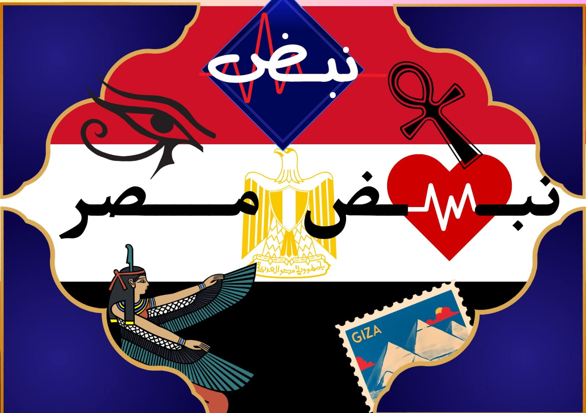
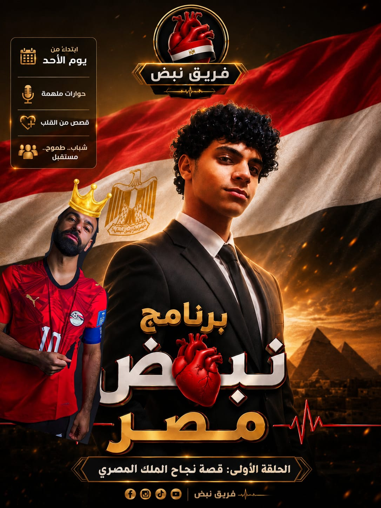

نبض مصر هو موقع وبرنامج يسلط الضوء على عظمة مصر وتاريخها العريق، ويستعرض أبرز الشخصيات المصرية التي أثرت في مجالات العلم والفن والرياضة والسياسة والثقافة. يهدف إلى تعزيز الانتماء، وإبراز إنجازات المصريين، وربط الماضي العريق بالحاضر والمستقبل.

ولد محمد صلاح حامد في قرية نجريج التابعة لمحافظة الغربية. بدأ مشواره الكروي في مدرسة بيبسي لاكتشاف المواهب، ثم انضم إلى ناشئي نادي المقاولون العرب، وصعد للفريق الأول عام 2010 قبل أن يبدأ رحلة الاحتراف الأوروبية مع نادي بازل السويسري.
تألق مع بازل السويسري، ثم انتقل إلى تشيلسي الإنجليزي. بعد ذلك لعب مع فيورنتينا وروما الإيطاليين واستعاد مستواه، قبل انتقاله إلى ليفربول عام 2017 حيث أصبح أحد أعظم لاعبي النادي وقاده لتحقيق دوري أبطال أوروبا والدوري الإنجليزي وكأس العالم للأندية.
حقق محمد صلاح العديد من الإنجازات التاريخية، من بينها: • الفوز بالحذاء الذهبي للدوري الإنجليزي عدة مرات. • أفضل لاعب في إنجلترا. • أفضل لاعب في إفريقيا. • الهداف التاريخي لعدد كبير من المواسم مع ليفربول.
تزوج محمد صلاح من ماغي محمد صادق عام 2013. وله ابنتان هما مكة وكيان. ويشتهر بأعماله الخيرية الكبيرة داخل مصر وخاصة في قريته نجريج.
يعد محمد صلاح قائد المنتخب المصري وأحد أفضل لاعبيه عبر التاريخ. قاد منتخب مصر للتأهل إلى كأس العالم 2018 بعد غياب دام 28 عاماً، كما وصل بالمنتخب إلى نهائي كأس الأمم الإفريقية مرتين.